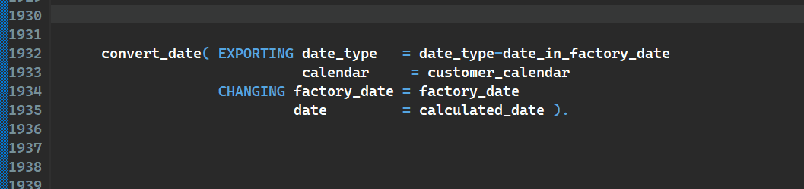

ABAP Quick Fixes - Align Logical Operators
It helps to keep code more readable for those developers, who like to have everything aligned.
You need to select the code to be aligned. Works with first found operators from: "EQ", "BT", "BETWEEN", "NE", "IN", "NOT", "IS", "CP", "CN", "CS", "NS", "LT",
"LE", "GE", "GT", "=", "<>", ">", "<", ">=", "<=".
